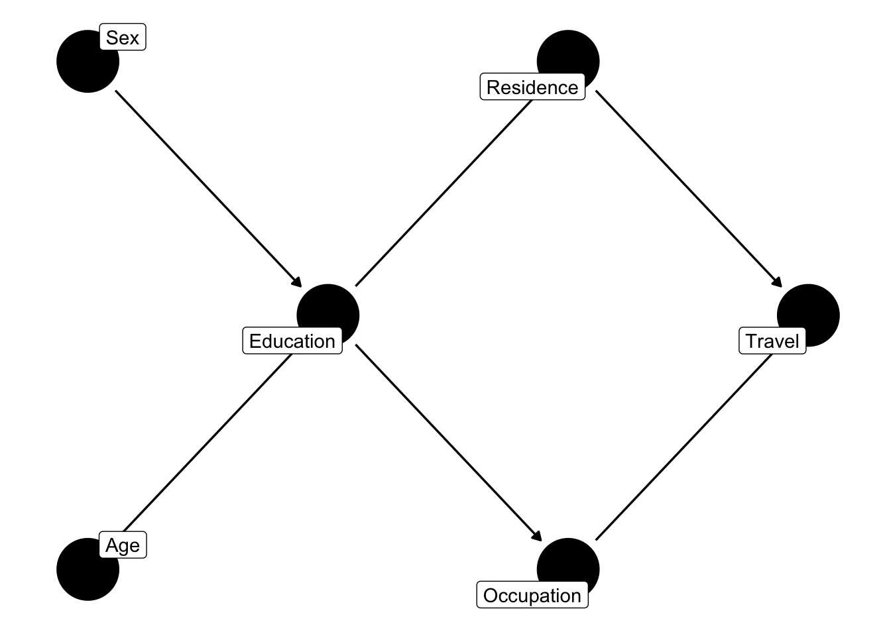

library(tidyverse)
library(GGally)
library(bnlearn)
library(gRain)GEOG 6960 Causality in Geog. Studies 10
Introduction
In this lab, we’re going to take a quick look at working with Bayesian networks. These are probabilistic graph models, that overlap with path models and structural equation models. The main difference is that these are based on Bayesian theory, which makes it possible to include prior information and provides probabilistic estimates that can help understand the uncertainty in a model. Note that these are not uniquely causal models - these can be used simply to model the relationships between a set of observations. However, in the absence of confounders (i.e. all known ones are accounted for), then these can be used for causal analysis.
Bayesian networks are developed in two steps: structure learning and parameter learning. Both of these can incorporate expert knowledge, and we’ll see examples of this below.
We’ll use two datasets:
- Travel survey data
- Keeley and Grace fire data set (keeley.csv)
Bayesian networks
Both R and Python have several packages that allow you to create SEMs and estimate coefficients based on a dataset. We’ll use bnlearn for R and pgmpy for Python here. Other packages include:
- R: BayesianNetwork and gRain
- Python: PyMC3, bnlearn and PyBN
First load (or install and load) the relevant packages. We’ll need some additional packages to explore the data before model building.
import pandas as pd
import statsmodels.api as sm
import statsmodels.formula.api as smf
from IPython.display import ImageDiscrete Bayesian Networks
We’ll start with an example of a discrete Bayesian Network. In these networks, all variables are multinomial (i.e. binary or multi-category). This facilitates the analysis as all probability distributions can be described as simple conditional probability tables (more on this below).
Data
Let’s now load the data. The dataset we’ll use represents information from a travel survey. This includes the following variables (listed with their categories):
- Age (
A): adult/young/old - Size of employment region (
R): big/small - Education (
E): high/uni - Occupation (
O): emp/self - Sex (
S): F/M - Travel mode (
T): car/train/other
travel <- read.table("./data/survey.txt", header = TRUE)
head(travel) A R E O S T
1 adult big high emp F car
2 adult small uni emp M car
3 adult big uni emp F train
4 adult big high emp M car
5 adult big high emp M car
6 adult small high emp F traintravel <- travel %>%
mutate_if(is_character, ~as.factor(.x))travel = pd.read_csv("./data/survey.txt",
delimiter=' ', header=0)
travel.head() A R E O S T
0 adult big high emp F car
1 adult small uni emp M car
2 adult big uni emp F train
3 adult big high emp M car
4 adult big high emp M carThe nodes are assumed to connect following the DAG below. In this, there are the following paths:
- Path from age to education (younger people more likely to have higher ed level)
- Path from age to education (women more likely to have higher ed level)
- Path from education to occupation
- Path from education to residence (size of city; high ed -> bigger cities)
- Path from occupation type to travel mode
- Path from residence to travel mode

Example 1
In this first example, we’ll build both the structure and parameters of the model using expert knowledge.
Structure learning
bnlearn has a couple of different ways to specify network structures. The one we’ll use here allows you to create both the nodes (variables) and the links (paths) in one go. The function is model2network. Each variable is specified in [ ], together with any other variables that it depends on. So [C|A:B] indicates a node C which has paths coming in from nodes `A and B. (Note that the node names need to match the column headers of any data we want to use.) The following code specifies the DAG shown above:
dag <- model2network("[A][S][E|A:S][O|E][R|E][T|O:R]")
dag
Random/Generated Bayesian network
model:
[A][S][E|A:S][O|E][R|E][T|O:R]
nodes: 6
arcs: 6
undirected arcs: 0
directed arcs: 6
average markov blanket size: 2.67
average neighbourhood size: 2.00
average branching factor: 1.00
generation algorithm: Empty amat(dag) A E O R S T
A 0 1 0 0 0 0
E 0 0 1 1 0 0
O 0 0 0 0 0 1
R 0 0 0 0 0 1
S 0 1 0 0 0 0
T 0 0 0 0 0 0In Python’s pgmpy package, the network is built by specifying all the paths as a set of origin/destination tuples. Note that the node names need to match the column headers of any data we want to use. The following code specifies the DAG shown above:
from pgmpy.models import BayesianNetwork
travel_model = BayesianNetwork(
[
('A', 'E'),
('S', 'E'),
('E', 'O'),
('E', 'R'),
('O', 'T'),
('R', 'T')
]
)
travel_model<pgmpy.models.BayesianNetwork.BayesianNetwork object at 0x396fb8910>pgmpy doesn’t return the adjacency matrix directly, but you can access it through networkx:
import networkx as nx
G = nx.DiGraph(travel_model.edges())
print(nx.to_numpy_array(G))[[0. 1. 0. 0. 0. 0.]
[0. 0. 1. 1. 0. 0.]
[0. 0. 0. 0. 0. 1.]
[0. 0. 0. 0. 0. 1.]
[0. 1. 0. 0. 0. 0.]
[0. 0. 0. 0. 0. 0.]]In the network description, there are 6 paths described (all directed). The adjacency matrix shows these; each row is an origin node and each column a destination. A 1 represents a path from that origin to destination. We can visualize the structure as well:
bnlearn has a native plotting function, but usually a better plot can be obtained by using graphviz (you will probably need to install this separately).
# plot(dag)
graphviz.plot(dag)Loading required namespace: Rgraphviz
viz = travel_model.to_graphviz()
viz.draw('travel.png', prog='neato')
Image('travel.png')Parameter learning
In a discrete Bayesian network, the parameters are the conditional probabilities for each variable, and can be set using conditional probability tables (cpds). For an exogenous variable (one with no paths coming in), this simply represents the probability of each class. So if in our example, we expected 30% young respondents, 50% adult and 20% old, the cpd for age would be:
young |
adult |
old |
|---|---|---|
| 0.3 | 0.5 | 0.2 |
For endogenous variables (one with at least one path coming in) this becomes more difficult, as we need to specify the pairwise probabilities for each category of the variable of interest conditioned on each category of the parent variable. For example, occupation (O) is dependent on the level of education (E), so we might assign the following probabilities: emp and high: 96%; emp and uni: 92%; self and high: 4%; self and uni: 8%. Note the probabilites for each level of the variable of interest (O) have to sum to 1 (or 100%). The cpd might look something like this:
emp |
self |
|
|---|---|---|
high |
0.96 | 0.92 |
uni |
0.04 | 0.08 |
For variables with two incoming paths (E and T), this becomes even more complicated as we now need the conditional probability for each combination of categories (i.e. each of E, A and S). As you might imagine, this becomes non-trivial for large and complex networks, where learning from data provides an easier way forward.
Let’s now make the cpds. Generally, this requires the tables to be first defined then linked to the DAG created above.
In R, we first defined the levels, the categories of each variable:
A_lv <- c("young", "adult", "old")
S_lv <- c("M", "F")
E_lv <- c("high", "uni")
O_lv <- c("emp", "self")
R_lv <- c("small", "big")
T_lv <- c("car", "train", "other")Next, we define the cpds. We’ll start with the two exogenous variables (A and S). Each of these is simply a 1D vector of probabilities that should sum to 1. The vector for A needs three entries as there are three levels. Note that the dimnames are set using the levels created above (this allows the model to find the correct probability).
## ----cpds-A-S-----------------------------------------------------------------
A_cpd <- array(c(0.30, 0.50, 0.20), dim = 3, dimnames = list(A = A_lv))
A_cpdA
young adult old
0.3 0.5 0.2 S_cpd <- array(c(0.60, 0.40), dim = 2, dimnames = list(S = S_lv))
S_cpdS
M F
0.6 0.4 Next we’ll do the variables with one incoming path (O and R). These need a 2D array of probabilities:
## ----cpds-O-R-----------------------------------------------------------------
O_cpd <- array(c(0.96, 0.04,
0.92, 0.08), dim = c(2, 2),
dimnames = list(O = O_lv, E = E_lv))
O_cpd E
O high uni
emp 0.96 0.92
self 0.04 0.08R_cpd <- array(c(0.25, 0.75,
0.20, 0.80), dim = c(2, 2),
dimnames = list(R = R_lv, E = E_lv))
R_cpd E
R high uni
small 0.25 0.2
big 0.75 0.8And finally, the two variables with 2 incoming paths. These need a 3D array (one dimension per variable). Note that the dimension definitions start to become more important here. For E, we have A and S, which have 3 and 2 levels respectively, and E has 2. The order we have chose here (E, A, S) needs an array with the following dimensions [2,3,2].
For the second (T, 3 levels), we have O and R, which both have 2 levels. The array dimension are then [3,2,2].
## ----cpds-E-T-----------------------------------------------------------------
E_cpd <- array(c(0.75, 0.25, 0.72, 0.28, 0.88, 0.12, 0.64, 0.36, 0.70,
0.30, 0.90, 0.10), dim = c(2, 3, 2),
dimnames = list(E = E_lv, A = A_lv, S = S_lv))
E_cpd, , S = M
A
E young adult old
high 0.75 0.72 0.88
uni 0.25 0.28 0.12
, , S = F
A
E young adult old
high 0.64 0.7 0.9
uni 0.36 0.3 0.1T_cpd <- array(c(0.48, 0.42, 0.10, 0.56, 0.36, 0.08, 0.58, 0.24, 0.18,
0.70, 0.21, 0.09), dim = c(3, 2, 2),
dimnames = list(T = T_lv, O = O_lv, R = R_lv))
T_cpd, , R = small
O
T emp self
car 0.48 0.56
train 0.42 0.36
other 0.10 0.08
, , R = big
O
T emp self
car 0.58 0.70
train 0.24 0.21
other 0.18 0.09In Python, we can create these tables using pgmpy’s function TabularCPD.
from pgmpy.factors.discrete import TabularCPDWe’ll start with the two exogenous variables (A and S). Each of these is simply a 1D vector of probabilities that should sum to 1. The vector for A needs three entries as there are three levels. Note that the state_names are set using the levels created above (this allows the model to find the correct probability).
# Age
cpd_A = TabularCPD(variable='A',
variable_card=3,
values=[[0.3], [0.5], [0.2]],
state_names={'A': ['young', 'adult', 'old']})
print(cpd_A)+----------+-----+
| A(young) | 0.3 |
+----------+-----+
| A(adult) | 0.5 |
+----------+-----+
| A(old) | 0.2 |
+----------+-----+# Sex
cpd_S = TabularCPD(variable='S',
variable_card=2,
values=[[0.6], [0.4]],
state_names={'S': ['M', 'F']})
print(cpd_S)+------+-----+
| S(M) | 0.6 |
+------+-----+
| S(F) | 0.4 |
+------+-----+Next we’ll do the variables with one incoming path (O and R). These need a 2D array of probabilities (the columns represent the probability for one level of the destination node (e.g. O) and so should sum to 1. We specify the variables that are used as input as evidence, and need to specify the number of levels of these (evidence_card).
# Occupation
cpd_O = TabularCPD(variable='O', variable_card=2,
values=[[0.96, 0.92],
[0.04, 0.08]],
evidence=['E'], evidence_card=[2],
state_names={'O': ['emp', 'self'],
'E': ['high', 'uni']})
print(cpd_O)+---------+---------+--------+
| E | E(high) | E(uni) |
+---------+---------+--------+
| O(emp) | 0.96 | 0.92 |
+---------+---------+--------+
| O(self) | 0.04 | 0.08 |
+---------+---------+--------+# Sex
# Residence
cpd_R = TabularCPD(variable='R', variable_card=2,
values=[[0.25, 0.20],
[0.75, 0.80]],
evidence=['E'], evidence_card=[2],
state_names={'R': ['small', 'big'],
'E': ['high', 'uni']})
print(cpd_R)+----------+---------+--------+
| E | E(high) | E(uni) |
+----------+---------+--------+
| R(small) | 0.25 | 0.2 |
+----------+---------+--------+
| R(big) | 0.75 | 0.8 |
+----------+---------+--------+And finally, the two variables with 2 incoming paths. Again, we use a 2D array to represent these, where each row represents one level of the destination node (e.g. E) and each column represents one pair of levels of the input nodes (e.g. A and S). We now have two variables for evidence, and we need to update the evidence_card to reflect this (A has 3 levels and S has 2).
For the second (T, 3 levels), we have O and R as evidence, which both have 2 levels. The evidence_card dimension are then [2,2].
# Education
cpd_E = TabularCPD(variable='E', variable_card=2,
values=[[0.75, 0.64, 0.72, 0.70, 0.88, 0.90],
[0.25, 0.36, 0.28, 0.30, 0.12, 0.10]],
evidence=['A', 'S'],
evidence_card=[3, 2],
state_names={'E': ['high', 'uni'],
'A': ['young', 'adult', 'old'],
'S': ['M', 'F']})
print(cpd_E)+---------+----------+----------+----------+----------+--------+--------+
| A | A(young) | A(young) | A(adult) | A(adult) | A(old) | A(old) |
+---------+----------+----------+----------+----------+--------+--------+
| S | S(M) | S(F) | S(M) | S(F) | S(M) | S(F) |
+---------+----------+----------+----------+----------+--------+--------+
| E(high) | 0.75 | 0.64 | 0.72 | 0.7 | 0.88 | 0.9 |
+---------+----------+----------+----------+----------+--------+--------+
| E(uni) | 0.25 | 0.36 | 0.28 | 0.3 | 0.12 | 0.1 |
+---------+----------+----------+----------+----------+--------+--------+# Travel
cpd_T = TabularCPD(variable='T', variable_card=3,
values=[[0.48, 0.58, 0.56, 0.70],
[0.42, 0.24, 0.36, 0.21],
[0.10, 0.18, 0.08, 0.09]],
evidence=['O', 'R'],
evidence_card=[2, 2],
state_names={'T': ['car', 'train', 'other'],
'O': ['emp', 'self'],
'R': ['small', 'big']})
print(cpd_T)+----------+----------+--------+----------+---------+
| O | O(emp) | O(emp) | O(self) | O(self) |
+----------+----------+--------+----------+---------+
| R | R(small) | R(big) | R(small) | R(big) |
+----------+----------+--------+----------+---------+
| T(car) | 0.48 | 0.58 | 0.56 | 0.7 |
+----------+----------+--------+----------+---------+
| T(train) | 0.42 | 0.24 | 0.36 | 0.21 |
+----------+----------+--------+----------+---------+
| T(other) | 0.1 | 0.18 | 0.08 | 0.09 |
+----------+----------+--------+----------+---------+With these set, we can now link them to the network.
cpd <- list(A = A_cpd, S = S_cpd,
E = E_cpd, O = O_cpd,
R = R_cpd, T = T_cpd)
bn <- custom.fit(dag, cpd)You can print any of these from the fitted network as follows:
bn$T
Parameters of node T (multinomial distribution)
Conditional probability table:
, , R = small
O
T emp self
car 0.48 0.56
train 0.42 0.36
other 0.10 0.08
, , R = big
O
T emp self
car 0.58 0.70
train 0.24 0.21
other 0.18 0.09travel_model.add_cpds(cpd_A, cpd_S, cpd_E, cpd_O, cpd_R, cpd_T)You can print any of these from the fitted network as follows:
print(travel_model.get_cpds("T"))+----------+----------+--------+----------+---------+
| O | O(emp) | O(emp) | O(self) | O(self) |
+----------+----------+--------+----------+---------+
| R | R(small) | R(big) | R(small) | R(big) |
+----------+----------+--------+----------+---------+
| T(car) | 0.48 | 0.58 | 0.56 | 0.7 |
+----------+----------+--------+----------+---------+
| T(train) | 0.42 | 0.24 | 0.36 | 0.21 |
+----------+----------+--------+----------+---------+
| T(other) | 0.1 | 0.18 | 0.08 | 0.09 |
+----------+----------+--------+----------+---------+Example 2
For the second example, we’ll use the network structure that we created from expert knowledge in the first example, but we’ll learn the parameters using the travel survey dataset:
Structure learning
We’ll recreate the empty DAG first (note that we could simply update the parameters from the original if we wanted).
dag <- model2network("[A][S][E|A:S][O|E][R|E][T|O:R]")travel_model = BayesianNetwork(
[
('A', 'E'),
('S', 'E'),
('E', 'O'),
('E', 'R'),
('O', 'T'),
('R', 'T')
]
)Parameter learning
Let’s now learn the parameters. We’ll use a Maximum Likelihood estimator, but there are other options (e.g. Expectation Maximization):
bn.mle <- bn.fit(dag, data = travel, method = "mle")from pgmpy.estimators import MaximumLikelihoodEstimatortravel_model.fit(travel, MaximumLikelihoodEstimator)You can check that the values match those in the file
In R, the combination of table and prop.table can be used to show probabilities. Here’s the values from the original dataframe for A:
prop.table(table(travel[, c("A")]))
adult old young
0.472 0.208 0.320 And here’s the estimates from the model fit:
bn.mle$A
Parameters of node A (multinomial distribution)
Conditional probability table:
adult old young
0.472 0.208 0.320 Similarly, here are the original probabilities for O, conditioned on E:
prop.table(table(travel[, c("O", "E")]), margin = 2) E
O high uni
emp 0.98082192 0.92592593
self 0.01917808 0.07407407And here are the model estimates:
bn.mle$O
Parameters of node O (multinomial distribution)
Conditional probability table:
E
O high uni
emp 0.98082192 0.92592593
self 0.01917808 0.07407407In Python, we can use pandas’ value_counts() function to get the original probabilities:
travel['A'].value_counts(normalize=True)A
adult 0.472
young 0.320
old 0.208
Name: proportion, dtype: float64And here’s the estimates from the model fit:
print(travel_model.get_cpds('A'))+----------+-------+
| A(adult) | 0.472 |
+----------+-------+
| A(old) | 0.208 |
+----------+-------+
| A(young) | 0.32 |
+----------+-------+Similarly, here are the original probabilities for O, conditioned on E:
pd.crosstab(travel['O'], travel['E'], normalize='columns')E high uni
O
emp 0.980822 0.925926
self 0.019178 0.074074And here are the model estimates:
print(travel_model.get_cpds('O'))+---------+----------------------+---------------------+
| E | E(high) | E(uni) |
+---------+----------------------+---------------------+
| O(emp) | 0.9808219178082191 | 0.9259259259259259 |
+---------+----------------------+---------------------+
| O(self) | 0.019178082191780823 | 0.07407407407407407 |
+---------+----------------------+---------------------+Example 3
For the third example, we’ll look at how to learn the network structure from the dataset.
Structure learning
There are a large number of structure learning algorithms. Here, we’ll just demonstrate the HillClimb (a form of greedy search) and the Peters-Clark algorithm. If you are interested in using these with your own data, I’d strongly recommend reading the documents for other options.
- Hill Climb
travel_hc <- hc(travel)
modelstring(travel_hc)[1] "[R][E|R][T|R][A|E][O|E][S|E]"graphviz.plot(travel_hc)- Peters-Clark
travel_pc <- pc.stable(travel)Warning in vstruct.apply(arcs = arcs, vs = vs, nodes = nodes, debug = debug):
vstructure E -> R <- T is not applicable, because one or both arcs are oriented
in the opposite direction.# modelstring(travel_pc)graphviz.plot(travel_pc)from pgmpy.estimators import PC, HillClimbSearch- Hill Climb
est = HillClimbSearch(data=travel)
travel_hc = est.estimate()
0%| | 0/1000000 [00:00<?, ?it/s]
0%| | 7/1000000 [00:00<1:37:36, 170.75it/s]viz = travel_hc.to_graphviz()
viz.draw('travel_hc.png', prog='neato')
Image('travel_hc.png')- Peters-Clark
est = PC(data=travel)
travel_pc = est.estimate()
0%| | 0/5 [00:00<?, ?it/s]
Working for n conditional variables: 0: 0%| | 0/5 [00:00<?, ?it/s]
Working for n conditional variables: 1: 20%|## | 1/5 [00:00<00:00, 84.56it/s]
Working for n conditional variables: 2: 40%|#### | 2/5 [00:00<00:00, 80.37it/s]
Working for n conditional variables: 2: 40%|#### | 2/5 [00:00<00:00, 80.20it/s]viz = travel_pc.to_graphviz()
viz.draw('travel_pc.png', prog='neato')
Image('travel_pc.png')The learned structure is quite a way from our original DAG, but provides a first estimate of the structure that can be subsequently modified.
Inference with Bayesian networks
Once the model is set up (i.e. structure and parameter learning has been run), we can use it to ask questions. This can be done with exact or approximate inference. For this model, which is relatively simple, we’ll use the exact approach.
In R, the model can be queried by first converting it to a junction tree (this allows quick queries across the graph structure):
junction <- compile(as.grain(bn.mle))Now we can query it using querygrain. For example, to know the probabilities of different travel modes, we simply ask it to return a single node (this is \(P(T)\)):
querygrain(junction, nodes = "T")$TT
car other train
0.5798627 0.1696901 0.2504472 More usefully, we can query the model with evidence. This simply means setting some of the nodes to fixed values. To do this, we first adjust the junction with the evidence, then query it. So to see the travel probabilities for female participants (this is \(P(T|S)\):
jquery <- setEvidence(junction, nodes = "S", states = "F")
querygrain(jquery, nodes = "T")$TT
car other train
0.5808236 0.1710347 0.2481417 There’s no great difference in the results, suggesting that there is little difference between female and male participants in travel mode choice.
Another question is whether living in small or big towns affects travel choice (\(P(T|R)\)):
jquery <- setEvidence(junction, nodes = "R", states = "small")
querygrain(jquery, nodes = "T")$TT
car other train
0.55255599 0.08165301 0.36579100 You can also combine multiple lines of evidence in the query. We can, for example, query the travel models for older participants in big towns:
jquery <- setEvidence(junction, nodes = c("R", "A"),
states = c("big", "old"))
querygrain(jquery, nodes = "T")$TT
car other train
0.5876406 0.1982070 0.2141524 You can also query multiple nodes. For example, to see the probability relating to car drivers (S and E):
jquery <- setEvidence(junction, nodes = c("T"),
states = c("car"))
querygrain(jquery, nodes = c("S", "E"))$E
E
high uni
0.7263969 0.2736031
$S
S
F M
0.4026662 0.5973338 This returns the marginal probability (i.e. the independent probabilities). You can also get the conditional probabilities as follows. In this case, this shows the probability of a car driver being male or female conditioned on their education level.
querygrain(jquery, nodes = c("S", "E"),
type = "conditional") E
S high uni
F 0.3577227 0.521988
M 0.6422773 0.478012In Python, the model can be queried using a couple of different approaches. Here, we’ll use variable elimination, a simple method where and node that is conditionally independent is removed from the query before running it. First we need to instantiate an inference model using VariableElimination:
from pgmpy.inference import VariableElimination
travel_infer = VariableElimination(travel_model)Now we can query it using query. For example, to know the probabilities of different travel modes, we simply ask it to return a single node (this is \(P(T)\)):
q = travel_infer.query(variables=["T"])
print(q)+----------+----------+
| T | phi(T) |
+==========+==========+
| T(car) | 0.5799 |
+----------+----------+
| T(other) | 0.1697 |
+----------+----------+
| T(train) | 0.2504 |
+----------+----------+More usefully, we can query the model with evidence. This simply means setting some of the nodes to fixed values. To do this, we first adjust the junction with the evidence, then query it. So to see the travel probabilities for female participants (this is \(P(T|S)\):
q = travel_infer.query(variables=["T"], evidence={"S": "F"})
print(q)+----------+----------+
| T | phi(T) |
+==========+==========+
| T(car) | 0.5808 |
+----------+----------+
| T(other) | 0.1710 |
+----------+----------+
| T(train) | 0.2481 |
+----------+----------+There’s no great difference in the results, suggesting that there is little difference between female and male participants in travel mode choice.
Another question is whether living in small or big towns affects travel choice (\(P(T|R)\)):
q = travel_infer.query(variables=["T"], evidence={"R": "small"})
print(q)+----------+----------+
| T | phi(T) |
+==========+==========+
| T(car) | 0.5526 |
+----------+----------+
| T(other) | 0.0817 |
+----------+----------+
| T(train) | 0.3658 |
+----------+----------+You can also combine multiple lines of evidence in the query. We can, for example, query the travel models for older participants in big towns:
q = travel_infer.query(variables=["T"],
evidence={"R": "big", "A": "old"})
print(q)+----------+----------+
| T | phi(T) |
+==========+==========+
| T(car) | 0.5876 |
+----------+----------+
| T(other) | 0.1982 |
+----------+----------+
| T(train) | 0.2142 |
+----------+----------+You can also query multiple nodes. For example, to see the probability relating to car drivers (S and E):
q = travel_infer.query(variables=["S", "E"],
evidence={"T": "car"},
joint=False)
print(q['S'])+------+----------+
| S | phi(S) |
+======+==========+
| S(F) | 0.4027 |
+------+----------+
| S(M) | 0.5973 |
+------+----------+print(q['E'])+---------+----------+
| E | phi(E) |
+=========+==========+
| E(high) | 0.7264 |
+---------+----------+
| E(uni) | 0.2736 |
+---------+----------+This returns the marginal probability (i.e. the independent probabilities). You can also get the conditional probabilities as follows. In this case, this shows the probability of a car driver being male or female conditioned on their education level.
q = travel_infer.query(variables=["S", "E"],
evidence={"T": "car"},
joint=True)
print(q)+------+---------+------------+
| S | E | phi(S,E) |
+======+=========+============+
| S(F) | E(high) | 0.2598 |
+------+---------+------------+
| S(F) | E(uni) | 0.1428 |
+------+---------+------------+
| S(M) | E(high) | 0.4665 |
+------+---------+------------+
| S(M) | E(uni) | 0.1308 |
+------+---------+------------+Gaussian Bayesian networks
We’ll next look at working with continuous data in a Gaussian Bayesian network. Here’s we’ll use the published DAG to create our network, but learn the parameters from the data. Start by loading this:
keeley <- read.csv("./data/keeley.csv")
head(keeley) distance elev abiotic age hetero firesev cover rich
1 53.40900 1225 60.67103 40 0.757065 3.50 1.0387974 51
2 37.03745 60 40.94291 25 0.491340 4.05 0.4775924 31
3 53.69565 200 50.98805 15 0.844485 2.60 0.9489357 71
4 53.69565 200 61.15633 15 0.690847 2.90 1.1949002 64
5 51.95985 970 46.66807 23 0.545628 4.30 1.2981890 68
6 51.95985 970 39.82357 24 0.652895 4.00 1.1734866 34We’ll drop the elev value as we won’t be using it, and convert all the values to numeric (they are read in as integers)
keeley <- keeley %>%
select(-elev) %>%
mutate_if(is_integer, ~as.numeric(.x))keeley = pd.read_csv("./data/keeley.csv")
keeley.head() distance elev abiotic age hetero firesev cover rich
0 53.40900 1225 60.671026 40 0.757065 3.50 1.038797 51
1 37.03745 60 40.942914 25 0.491340 4.05 0.477592 31
2 53.69565 200 50.988054 15 0.844485 2.60 0.948936 71
3 53.69565 200 61.156331 15 0.690847 2.90 1.194900 64
4 51.95985 970 46.668071 23 0.545628 4.30 1.298189 68We’ll drop the elev value as we won’t be using it
keeley.drop('elev', axis=1, inplace=True)Structure learning
We’ll build the network manually again.
In R, we’ll do this in two steps to make this a bit more interpretable. We first create an empty graph, where we specify the nodes (note that the names need to correspond to the column names in the data frame for parameter learning)
dag <- empty.graph(nodes = c("distance", "abiotic", "hetero", "age",
"firesev", "cover", "rich"))
dag
Random/Generated Bayesian network
model:
[distance][abiotic][hetero][age][firesev][cover][rich]
nodes: 7
arcs: 0
undirected arcs: 0
directed arcs: 0
average markov blanket size: 0.00
average neighbourhood size: 0.00
average branching factor: 0.00
generation algorithm: Empty We can now start adding paths one at a time using set.arc. This takes as arguments: the original DAG, and the origin and destination nodes.
dag <- set.arc(dag, from = "distance", to = "abiotic")
dag <- set.arc(dag, from = "distance", to = "hetero")
dag <- set.arc(dag, from = "distance", to = "age")
dag <- set.arc(dag, from = "age", to = "firesev")
dag <- set.arc(dag, from = "firesev", to = "cover")
dag <- set.arc(dag, from = "cover", to = "rich")
dag <- set.arc(dag, from = "abiotic", to = "rich")
dag <- set.arc(dag, from = "hetero", to = "rich")And plot:
graphviz.plot(dag)
from pgmpy.models import LinearGaussianBayesianNetwork
keeley_model = LinearGaussianBayesianNetwork(
[
('distance', 'abiotic'),
('distance', 'hetero'),
('distance', 'hetero'),
('age', 'firesev'),
('firesev', 'cover'),
('cover', 'rich'),
('abiotic', 'rich'),
('hetero', 'rich')
]
)
keeley_model<pgmpy.models.LinearGaussianBayesianNetwork.LinearGaussianBayesianNetwork object at 0x399ad60b0>viz = keeley_model.to_graphviz()
viz.draw('keeley.png', prog='dot')
Image('keeley.png')Parameter learning
Now we can learn the network parameters from the keeley dataframe:
keeley_bn <- bn.fit(dag, data = keeley)keeley_model.fit(keeley)Unlike the discrete network above, these networks assume that all variables are Gaussian, so can be estimated as a mean and variance. For exogenous variables, we only have these parameters:
keeley_bn$distance
Parameters of node distance (Gaussian distribution)
Conditional density: distance
Coefficients:
(Intercept)
49.23458
Standard deviation of the residuals: 8.82948 lm(distance ~ 1, data = keeley)
Call:
lm(formula = distance ~ 1, data = keeley)
Coefficients:
(Intercept)
49.23 print(keeley_model.get_cpds('distance'))P(distance) = N(49.235; 77.96)mod = smf.ols(formula='distance ~ 1', data=keeley)
fit_D = mod.fit()
print(fit_D.params)Intercept 49.234583
dtype: float64For any endogenous variable, the mean is conditioned on the parent nodes or variables. This simply equates to a linear model of the mean based on the parents. For example, the richness variable (rich) is conditioned on abiotic, hetero and cover (see paths above) giving:
\[ \mbox{rich} = \beta_0 + \beta_a \mbox{abiotic} + \beta_h \mbox{hetero}+ \beta_c \mbox{cover} + e; e \sim N(0, \sigma^2) \] To check this compare the results of the network model:
keeley_bn$rich
Parameters of node rich (Gaussian distribution)
Conditional density: rich | abiotic + hetero + cover
Coefficients:
(Intercept) abiotic hetero cover
-34.0773160 0.6847365 55.3686362 17.0137736
Standard deviation of the residuals: 11.0076 With a simple linear model:
lm(rich ~ abiotic + hetero + cover, data = keeley)
Call:
lm(formula = rich ~ abiotic + hetero + cover, data = keeley)
Coefficients:
(Intercept) abiotic hetero cover
-34.0773 0.6847 55.3686 17.0138 print(keeley_model.get_cpds('rich'))P(rich | cover, abiotic, hetero) = N(17.014*cover + 0.685*abiotic + 55.369*hetero + -34.077; 117.083)mod = smf.ols(formula='rich ~ abiotic + hetero + cover', data=keeley)
fit_D = mod.fit()
print(fit_D.params)Intercept -34.077316
abiotic 0.684736
hetero 55.368636
cover 17.013774
dtype: float64Inference
As this network is a little more complex, we’ll use approximate inference methods. These are based on random samples from the probability distributions underlying the model, and so your results may differ a little from those shown here.
As a first example, we’ll create some random samples of richness from the model, but with conditions: age of the vegetation is 60 and abiotic factors are 50:
sim_data = cpdist(keeley_bn, nodes = "rich",
evidence = list(age = 60, abiotic = 50),
method = "lw")
head(sim_data) rich
1 23.57638
2 40.00067
3 70.40909
4 53.42875
5 48.34768
6 40.16778ggplot(sim_data, aes(x = rich)) +
geom_histogram() +
theme_bw()`stat_bin()` using `bins = 30`. Pick better value with `binwidth`.As before, you can both query multiple nodes and use multiple conditions:
sim_data <- cpdist(keeley_bn,
nodes = c("rich", "firesev", "cover"),
evidence = (age > 60 & abiotic > 50))
head(sim_data) rich firesev cover
1 41.91827 9.334461 0.28685751
2 43.42748 6.821799 0.74889283
3 54.91049 5.857335 0.55463330
4 17.73995 8.456082 0.01939383
5 69.43777 4.054849 0.45703171
6 44.89904 6.749153 0.43393182And you can also query probabilities. For example, to find the probability that fire severity is above 6 for a location where the vegetation is 60 years old, abiotic factors are 30 and cover is equal to 0.5:
cpquery(keeley_bn, event = (firesev > 6),
evidence = list(age = 60, abiotic = 30, cover = 0.5),
method = "lw")[1] 0.7061464Currently, the pgmpy does not run inference on Linear Gaussian networks. So instead, we’ll use a second package to do this (lgnpy). You’ll need to install this (pip install lgnpy). You may also need to fix an error in one of the files. Find the file LinearGaussian.py in the lgnpy library, go to line 106, and replace pd.np.nan with np.nan. Now let’s load it and build the model:
from lgnpy import LinearGaussian
lg = LinearGaussian()
lg.set_edges_from([
('distance', 'abiotic'),
('distance', 'hetero'),
('distance', 'age'),
('age', 'firesev'),
('firesev', 'cover'),
('cover', 'rich'),
('abiotic', 'rich'),
('hetero', 'rich')
]
)Next, estimate the model parameters:
lg.set_data(keeley)
lg.network_summary() Node Mean Std Parents Children
0 abiotic 49.2390 7.6791 [distance] [rich]
1 age 25.5667 12.5663 [distance] [firesev]
2 cover 0.6912 0.3172 [firesev] [rich]
3 distance 49.2346 8.8295 [] [abiotic, hetero, age]
4 firesev 4.5650 1.6523 [age] [cover]
5 hetero 0.6833 0.1148 [distance] [rich]
6 rich 49.2333 15.1057 [cover, abiotic, hetero] []Now we can run inference on the model. First run the inference with no constraints. This will print the expected mean and variance for all variables in the model. Note that the Mean and Mean_inferred columns are the same, as there are no conditioning variables.
lg.run_inference(debug=False) Evidence Mean Mean_inferred Variance Variance_inferred u_%change
abiotic 49.239025 49.239 58.969 46.5059
age 25.566667 25.5667 157.911 145.6946
cover 0.691232 0.6912 0.101 0.0814 0.0
distance 49.234583 77.96
firesev 4.565 4.565 2.73 2.1678
hetero 0.683319 0.6833 0.013 0.0116
rich 49.233333 49.2333 228.181 117.0829 Let’s re-run this, but set the evidence to condition on stands that are 50 years old. We’ll just examine the inferred effect on fire severity, which shows a roughly 30% increase
lg.set_evidences({'age':50})
lg.run_inference(debug=False).loc['firesev']Evidence
Mean 4.565
Mean_inferred 6.0232
Variance 2.73
Variance_inferred 2.1678
u_%change 31.942115
Name: firesev, dtype: objectNow let’s compare this to a younger stand (which gives about a 14% decrease):
lg.set_evidences({'age':15})
lg.run_inference(debug=False).loc['firesev']Evidence
Mean 4.565
Mean_inferred 3.9344
Variance 2.73
Variance_inferred 2.1678
u_%change -13.813984
Name: firesev, dtype: objectAs before, you can condition on multiple variables:
lg.clear_evidences()
lg.set_evidences({'age':50, 'distance':10})
lg.run_inference(debug=False).loc['rich']Evidence
Mean 49.233333
Mean_inferred 26.6358
Variance 228.181
Variance_inferred 117.0829
u_%change -45.898786
Name: rich, dtype: objectAppendix: Data files
Travel survey dataset survey.txt
| Column header | Variable |
|---|---|
| A | Age category |
| R | Size of region |
| E | Education level |
| O | Employment |
| S | Sex (F/M) |
| T | Travel mode |
Grace and Keeley dataset keeley.csv
| Column header | Variable |
|---|---|
| distance | Distance to coast (m) |
| elev | Elevation a.s.l. |
| abiotic | Abiotic favorability |
| age | Age of stand before fire |
| hetero | Plot heterogeneity |
| firesev | Severity of fire |
| cover | Cover of plants |
| rich | Plant species richness |